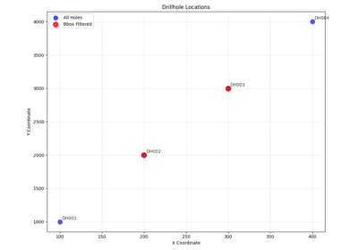
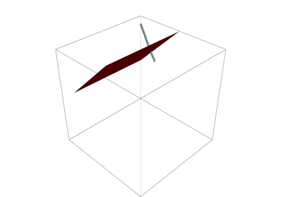
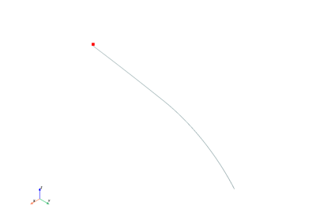

Examples#

Basic DrillholeDatabase Usage


sphx_glr__auto_examples_example_preprocessing.py
Example demonstrating preprocessing and imputation tools for DrillholeDatabase.

sphx_glr__auto_examples_example_string_representations.py
Example: Using String Representations for Drillhole Data Exploration

Find Drillhole intersection


Single drill hole